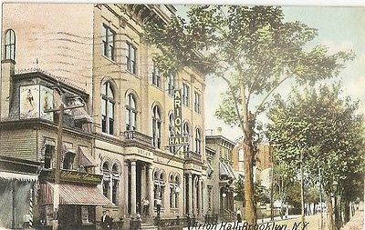
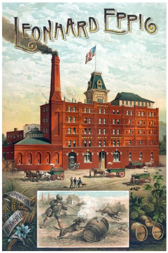
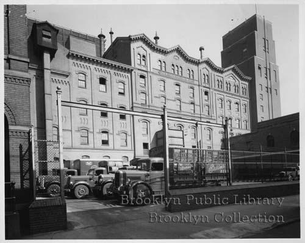
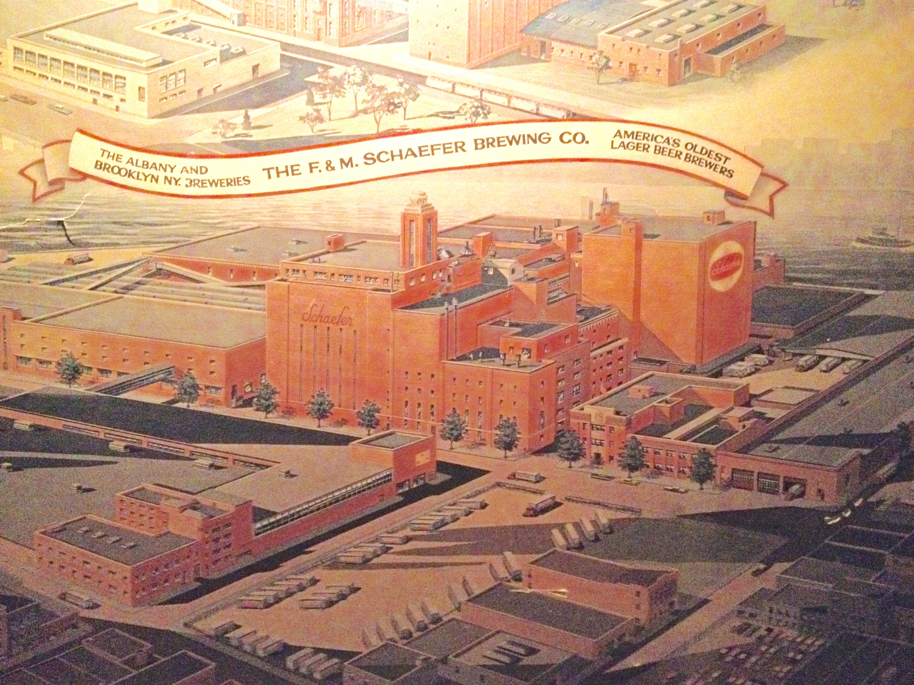

William Ulmer Brewery (1872–1920)

Designed by famed German-American architect Theobald Engelhardt in the Rundbogenstil style, The William Ulmer Brewery complex was designated a NYC landmark in 2010.
Fun fact! William Ulmer opened an outdoor park named Ulmer Park in Gravesend with a picnic ground, bowling alley, and all the Ulmer beer you could drink.
Arion Hall (1886–1920)
This is not a brewery but too good to leave off the list. Now known as The Opera House Lofts, Arion Hall was the home of the Arion Mannerchör, Bushwick’s foremost German “singing society.”
They gave public and benefit concerts, hosted sponsored galas, including large and elaborate masked balls, staged operettas, and entertained President Teddy Roosevelt at the White House.
The street was even named after them.
John F. Trommer’s Evergreen Brewery and Restaurant (1897–1955)

We won’t see Trommer’s on this tour but the brewery does play an important role in Bushwick history. Trommer was William Ulmer’s brewmaster and eventually opens his own brewery and restaurant as one of the first brew pubs in America.
This photo shows George Trommer launching one of the largest fleets of trucks ever assembled for the distribution of a single product for the filling of thousands of orders after Prohibition.
Leonhard Eppig’s Germania Brewery (1888–1950)
Eppig was a towering figure in Bushwick and major benefactor to the German Catholic community in Bushwick’s early years. Note the "E.D." after Brooklyn in hte lower left. That was a common way to denote the Eastern District.
Liebmann & Sons (Rheingold Brewery), (1855–1976)
Rheingold Brewery operated for 121 years — beginning over 160 years ago — and for a time, it was the number one beer in New York with a 35% share of the market.
Rheingold also created some of the most iconic advertising in history, including the Miss Rheingold competition, which itself had a pavilion at the 1964 New York World’s Fair.
F&M Schaefer Brewery (1842–1976)
Schaefer operated for 134 years, beginning over 170 years ago. We won’t get to this brewery on the tour but it is significant for producing one of the first lagers in America in 1842. The last remaining building was recently torn down on South 9th Street in Williamsburg but this portrait still hangs in The Gutter.
Huber-Hittleman Brewery (1875–1951)

Our tour will end here and what a destination it is. Otto Huber opened this complex in 1875 and the brewery was in operation for 76 years. If we’re lucky we can take a look inside and drink in the history!